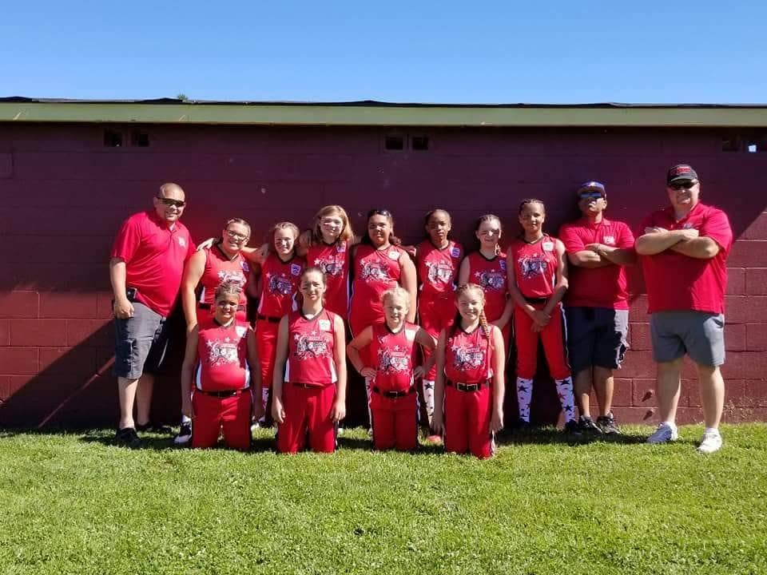
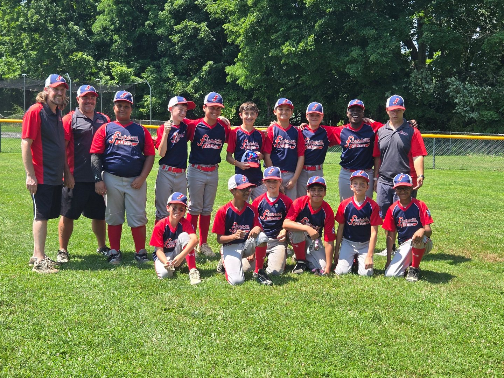

From Geering Park to games under the lights
In August 1954, the Poughkeepsie Journal reported plans for a Fishkill Little League fete. Seventy years later, on October 4, 2024, the league played its first game under the lights at Robert G. Shepheard Memorial Park. Between those two dates, local families raised money for fields, organized softball teams and took Fishkill baseball to a regional tournament in New Jersey.
The early years and the fields families built
Fishkill Little League traces its founding to 1954. The organization incorporated in 1957, and Geering Park became part of its early history. By the late 1970s, volunteers were organizing building-fund dances to raise money for a sports complex.
In March 1984, the Town Board adopted a resolution to acquire land on Route 82 from the league for a park. Aerial images from 1990 and 1995 show how the diamonds took shape in stages. Today, that property is home to Robert G. Shepheard Memorial Park.

Building a softball program
Little League introduced softball nationally in 1974. In the early 1980s, local newspaper notices called for volunteers to help establish a Fishkill program.
By 2003, Fishkill was competing in Junior League softball tournaments. The Poughkeepsie Journal recorded an 11–10 win over Hyde Park and named Kaiti Decker and Kayla McVeigh in its account of the game. Explore softball in Fishkill today.

From district diamonds to the Eastern Regional
In 2007, Fishkill represented New York at the Senior League Baseball Eastern Regional in West Deptford, New Jersey. The team beat Connecticut 4–0 and Delaware 9–6.
In 2018, the combined Fishkill–Philipstown team of 10–11-year-old All-Stars, nicknamed “Fishtown,” won the District 17 championship and advanced to sectionals.
In 2026, Fishkill’s 12U Majors All-Stars beat Red Hook/Rhinebeck 8–0 to reach the District 17 final, where they finished as runners-up to LaGrange.


October 4, 2024: The first game under the lights
Years after coaching with Joe Casullo, longtime volunteer Fred Cantor wrote in a remembrance that he was still working on lights for the fields. Cantor was there on October 4, 2024, when Fishkill Little League played its first game under the lights. The league was celebrating its 70th anniversary that year.
That evening grew out of years of work by volunteers and the Town of Fishkill. Today, it takes the same kind of effort to coach a team, get a field ready or open the concession stand. See how families can volunteer.